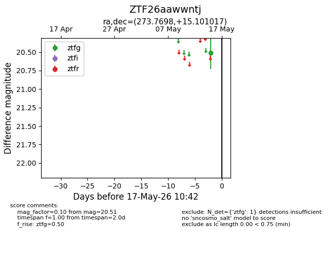
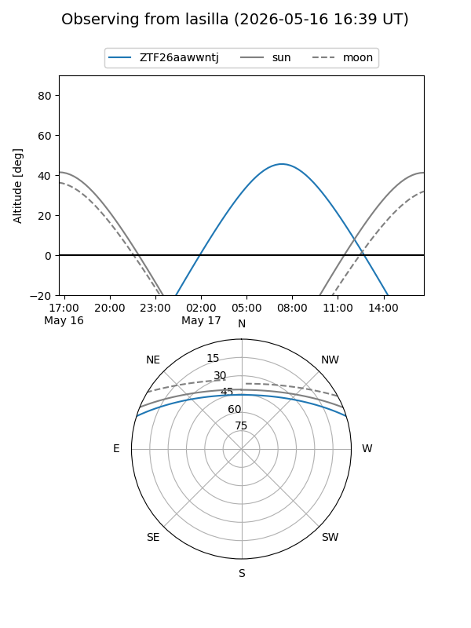
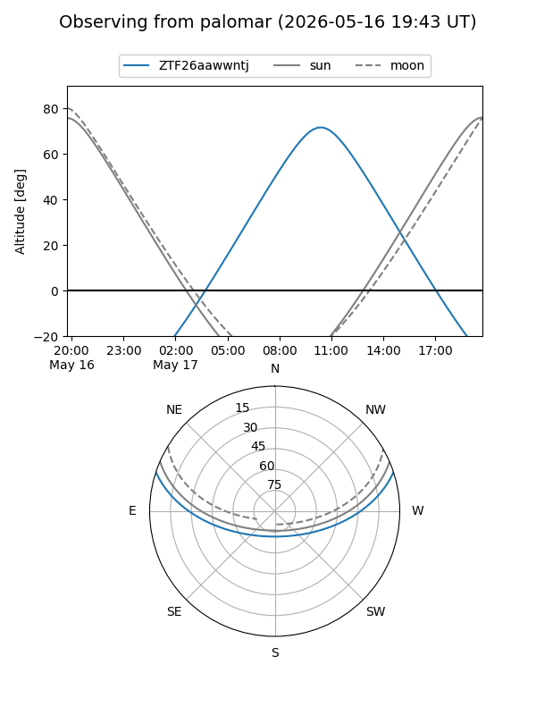

ZTF26aawwntj
Target ZTF26aawwntj at 2026-05-17 10:44
Aliases and brokers:
FINK: link
Lasair: link
ALeRCE: link
alt names
ZTF26aawwntj (ztf,fink_ztf)
Coordinates:
equatorial (ra, dec) = 273.7698,+15.10102
equatorial (HMS+DMS) = 18:15:04.74,+15:06:03.66
galactic (l, b) = (42.5942,+14.74629)
Flags:
Photometry:
last ztfg=20.51
1 ztfg detections
Lightcurve

Visibility


Additional plots